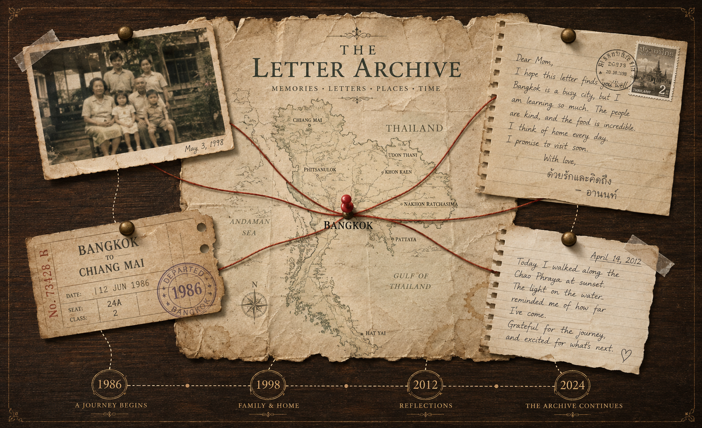

2D Design Statement
These canvases translate memory into layered images. In The Letter Archive, the composition behaves like a quiet evidence board: Thailand becomes a paper map, Bangkok becomes a pin, and family memory is distributed across a photograph, a letter, a train ticket, and a diary fragment. Red thread links each artifact to the map and the bottom timeline, turning biography into a readable spatial narrative. The two dynamic canvases extend that language into wind, bloom, and suspended letters.